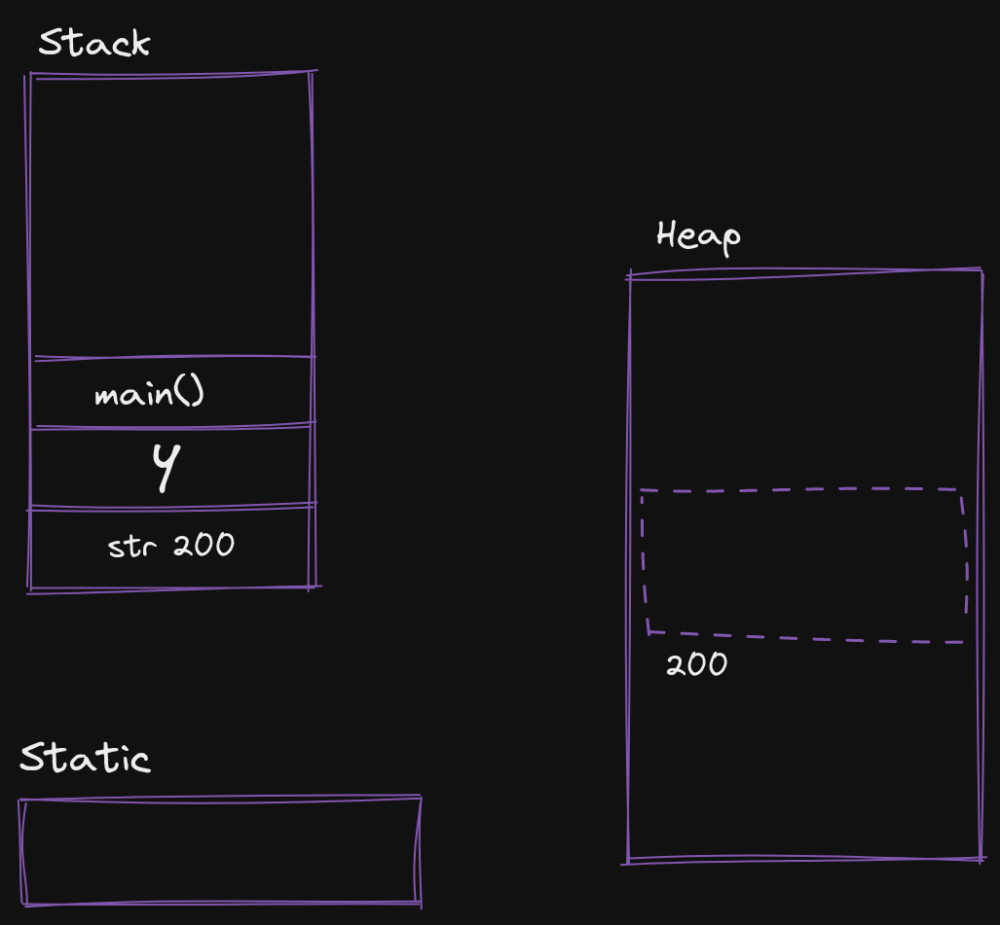

PCPF
1.A
i) Explain the difference between declarative and imperative programming paradigm.
Declarative and imperative are two main paradigms of computer programming.
Declarative programming focuses on describing the desired outcome of a program, rather than specifying how to achieve it. In this paradigm, the programmer declares what the program should do and the underlying system is responsible for executing the task. Examples of declarative programming languages are SQL, HTML, and XSLT.
Imperative programming, on the other hand, focuses on specifying how the task should be executed. In this paradigm, the programmer writes code that explicitly describes the steps to be taken to achieve a desired outcome. Examples of imperative programming languages are C, Java, and Python.
In summary, declarative programming focuses on what to do, while imperative programming focuses on how to do it.
Explain Names, Scopes and Bindings.
Names, scopes, and bindings are fundamental concepts in computer programming.
Names: In programming, a name is a label used to refer to a value, function, or object. Names can be assigned to various elements in the code and are used to refer to them later. For example, in a programming language like C, you can assign a name to a variable and then use that name to refer to its value: int x = 42. In this example, x is the name and 42 is the value.
Scopes: A scope is the region of the code in which a name is accessible. In other words, it determines the visibility and lifetime of a name. There are two types of scopes: global and local. A global scope is the entire program, and a name defined in a global scope can be accessed from anywhere in the program. A local scope is a specific block of code, such as a function or a loop, and a name defined in a local scope can only be accessed within that block. Example:
int x = 3; // Here `x` have globle scope
void main(void) {
int y = 5; // Here `y` has local scope which can only access inside `main` function
}
Bindings: A binding is the association of a name with a value. In other words, it is the process of assigning a value to a name. A binding creates a relationship between a name and a value that lasts until the end of the scope or until the binding is changed. For example, in the Python code int x = 42, x is the name, 42 is the value, and the assignment x = 42 creates the binding between x and 42.
In summary, names are labels used to refer to values, scopes determine the visibility and lifetime of names, and bindings associate names with values.
Explain different storage allocation mechanisms.
Static Storage Allocation
- Static storage allocation is a method of allocating memory for a program during the compilation process, before the program is executed.
- This method is also known as "compile-time allocation" or "static memory allocation."
- The memory is allocated in a fixed size and the size remains constant throughout the execution of the program.
- Pros:
- Simple to implement and understand.
- Memory allocation is done at compile time, so it is known in advance how much memory will be used by the program.
- No need for memory allocation and deallocation during runtime, so it can be more efficient.
- Cons:
- The amount of memory allocated cannot be changed during runtime.
- If the program requires more memory than what was allocated at compile time, it can lead to memory overflow errors.
- If the program uses less memory than what was allocated at compile time, it can lead to wasted memory.
Stack Based Storage Allocation :
- Stack-based storage allocation is a method of allocating memory for a program where memory is allocated and deallocated in a last-in, first-out (LIFO) order.
- The stack is a data structure that stores data in a linear manner, with the most recent item being added to the top of the stack.
- The memory is allocated for a specific scope, and once that scope is exited, the memory is deallocated.
- Pros:
- Simple to implement and understand.
- Memory allocation and deallocation is done automatically, so there is no need for manual memory management.
- Memory is allocated and deallocated in a LIFO order, which makes it easy to keep track of memory usage.
- Cons:
- The amount of memory that can be allocated is limited by the size of the stack.
- It's not suitable for data that needs to be stored longer-term.
- Recursive functions can cause stack overflow if the recursion goes too deep.

| Mechanism | Allocation | Deallocation | Lifetime | Speed | Responsibility | Usage |
|---|---|---|---|---|---|---|
| Stack allocation | LIFO | Automatically managed by the system | Function call | Fast | System | Function call frames and local variables |
| Heap allocation | Dynamic, at runtime | Programmer-managed | Persistent | Slow | Programmer | Objects and data structures with a longer lifetime |
| Static allocation | At compile time | Persistent for the entire program | Entire program | Fast | None | Global variables and constants |
1.B
i) What is paradigm and programming paradigm?
A paradigm is a set of beliefs, concepts, values, and practices that define and guide a particular discipline or field.
Programming paradigm is a term used to describe a set of practices and beliefs that define how a programmer should approach software development. It is a way of thinking about and solving problems using a particular set of techniques and concepts.
There are several programming paradigms, including:
- Imperative programming: This paradigm emphasizes describing how a program operates, using commands and statements to specify a sequence of actions. Example: C, C++, Java, Python, Go
- Declarative programming: This paradigm emphasizes describing what a program should accomplish, using expressions and statements to specify the desired result, rather than the steps to achieve the result. Example: SQL, Prolog, XSLT, HTML, CSS
- Object-Oriented programming: This paradigm emphasizes the use of objects, which are instances of classes that encapsulate data and behavior. Example: Java, C++, Python, Ruby, Swift, Objective-C
- Functional programming: This paradigm emphasizes the use of mathematical functions to describe the computation of a program, and the avoidance of changing state and mutable data. Example: Haskell, Scheme, ML, Lisp, F#, Erlang, Scala.
- Logic programming: This paradigm is based on formal logic and uses rules and facts to describe relationships between data and the desired outcome of a program. Example: Prolog
- Scripting: This paradigm emphasizes the use of scripting languages for automating tasks and creating simple programs. Example: Perl, Python, Bash, Ruby
i) Different between functional programming and object oriented programming.
| Feature | Functional Programming | Object-Oriented Programming |
|---|---|---|
| Focus | Emphasizes mathematical functions and expressions | Emphasizes objects, classes, and encapsulation of state and behavior |
| Mutability | Avoids changing state and mutable data, promoting immutability and purity | Encourages encapsulation of state and behavior and supports inheritance and polymorphism |
| Composition | Focuses on composing functions to solve problems | Focuses on objects sending and receiving messages to solve problems |
| Approach | Declarative, evaluating expressions and functions | Procedural, sending and receiving messages between objects |
| Reusability | Promotes reusability through higher-order functions and function composition | Promotes reusability through inheritance and polymorphism |
| Abstraction | Supports abstraction through higher-order functions and function composition | Supports abstraction through classes and objects |
| State | Avoids changing state and mutable data, promoting immutability and purity | Encourages encapsulation of state and behavior and supports inheritance and polymorphism |
What is calling sequence?
The calling sequence refers to the order in which function calls are made when a program is executed. In other words, it refers to the sequence in which functions are executed, starting from the main function and proceeding through any nested function calls.
Each time a function is called, the system stores information about the call, such as the values of the arguments, the location of the next instruction to be executed, and the location in the calling function where control should return. This information is typically stored on a stack data structure, and the system uses this information to keep track of the current function and to return to the calling function when the current function returns.
The calling sequence determines the order in which functions are executed, and it can have a significant impact on the behavior and performance of the program. For example, if the calling sequence leads to an excessive number of function calls, the program may run slowly or run out of stack space and crash. On the other hand, if the calling sequence is well optimized, the program can run more efficiently and produce more accurate results.
3
i) What is higher order function?
A higher-order function is a function that takes one or more functions as arguments and/or returns a function as its result. Higher-order functions are a key feature of functional programming, and they allow for a more abstract and composable approach to solving problems.
In simple terms, a higher-order function can either accept functions as inputs or produce a function as output, or both. By using higher-order functions, you can write more abstract, reusable, and composable code, making it easier to write, test, and maintain complex software systems.
Example in Python:
def square(x):
return x * x
def cube(x):
return x * x * x
def apply(func, x):
return func(x)
print(apply(square, 5)) # 25
print(apply(cube, 5)) # 125
ii) Difference between Normal and applicative order evaluation.
| Feature | Normal Order Evaluation | Applicative Order Evaluation |
|---|---|---|
| Evaluation Strategy | Evaluate arguments only when needed | Evaluate all arguments first |
| Computation Strategy | Lazy evaluation | Eager evaluation |
| Debugging | More difficult | Easier |
| Performance | Can be more efficient | Can be less efficient |
| Typical Use | Functional programming languages | Imperative programming languages |